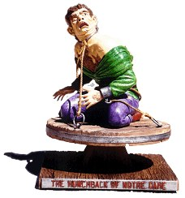

Model: Aurora's The Hunchback Of Notre Dame
Scale: 1/8
Material: Resin
Retail Price: $50 (plus $5 shipping)
Produced by: JimZ Hobbies
Reviewer: Denis Bohm
(denis_bohm@fireflydesign.com)
Build Ups:


 he Hunchback Of Notre Dame...
Just reading the title brings about vivid memories of ringing bells
and gothic images of stone gargoyles.
Aurora captured the essence of this classic story back in the '60s with
a single moment frozen in plastic. If you built the original
Aurora kit back when it was first released I'm sure you will
remember it!
he Hunchback Of Notre Dame...
Just reading the title brings about vivid memories of ringing bells
and gothic images of stone gargoyles.
Aurora captured the essence of this classic story back in the '60s with
a single moment frozen in plastic. If you built the original
Aurora kit back when it was first released I'm sure you will
remember it!
Aurora's original copyright on The Hunchback Of Notre Dame kit was registered in 1963 and never renewed. If a copyright originally secured before January 1, 1964, was not renewed at the proper time, copyright protection expired at the end of the 28th calendar year of the copyright, and could not be restored. Thus, this kit entered the public domain in 1991.
Now in 1996, JimZ Hobbies honors this great kit by bringing it back for all of us to enjoy again. The molds for this new version were made from original Aurora parts. The parts are cast in tan resin. I was very impressed with the quality of the parts! I couldn't spot any mold lines or flash on any of the parts. Most importantly, the air bubbles that can plaque resin kits were almost totally absent! This kit is on par with the best quality resin castings that I have seen made in the US.
 The parts come in a box with a copy of the original Aurora
box art.
A copy of the original instructions are also included.
You need to make sure you don't follow these directions and
use plastic cement on these parts. Since the parts are made
out of resin superglue should be used.
The parts come in a box with a copy of the original Aurora
box art.
A copy of the original instructions are also included.
You need to make sure you don't follow these directions and
use plastic cement on these parts. Since the parts are made
out of resin superglue should be used.
This kit is easier to build than the original plastic version. There are no sprues to remove the parts from, so this reduces the amount of cleanup to be done. Also, since the kit is resin, fast setting superglue can be used.
One way to fill seams on this kit is to thin out some putty and "paint" it on. Dr. Microtools Supreme Putty or Squadron White Putty can be mixed with nail polish remover to thin down until it's a little thicker than paint. Then use a inexpensive brush and "paint" the thinned putty into the seam. After it dries just scrap away with an X-Acto and the seam is filled. The same method can be used to fill any air bubbles. After scraping you can use a paper towel or Q-Tip dampened with nail polish remover to smooth over the scrape marks. You can even replicate the texture on the clothes by dabbing with the towel. Just be careful not to use too much remover or you'll wipe the putty out of the seam and have to start over.
I decided to assemble the figure without his hands and chains and then paint all the parts. After painting I carefully cut through the chain hoops and bent the hoops open so I could put them around the appropriate parts of the figure. Then a touch of superglue fastens the hoops back together. This let me fill the seams and paint without having the chains constantly in the way.
This is great kit! I thoroughly enjoyed building and painting it!
You can order one from:
Aurora is a registered trademark owned by Tomy America and these kits are neither authorized or approved by Tomy America.
The Gremlins in the Garage webzine is a production of Firefly Design. If you have any questions or comments please get in touch.
Copyright © 1994-1997 Firefly Design.